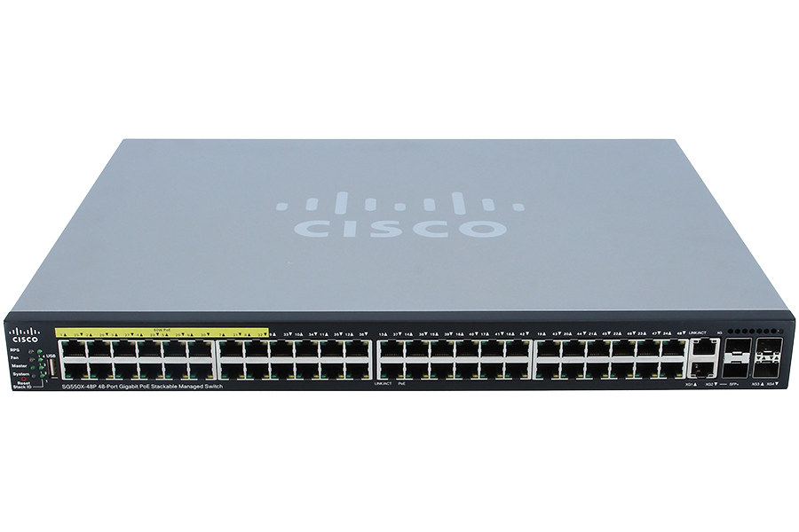
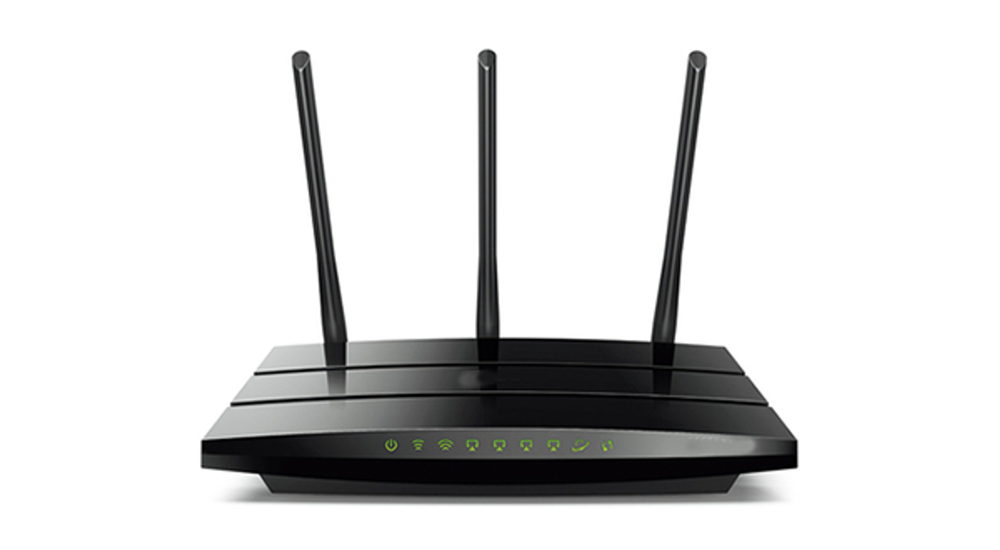

Couche 2 : Liaison de données
La couche liaison de données permet de faciliter le transfert de données entre deux appareils sur le même réseau. Pendant la circulation, la couche prend les paquets de la couche Réseau et les divisent en trames. Additionnellement, elle est responsable de contrôler le flux et reporter les erreurs intra-réseau
Fonctions principales
- Encapsulation des trames : Elle organise les données en trames, une unité de transmission au niveau 2
- Adressage physique : Elle utilise des adresses MAC pour identifier de manière unique les machines sur un réseau local
- Contrôle d’erreurs : Elle peut détecter (et parfois corriger) les erreurs de transmission
- Contrôle de flux : Elle régule la vitesse d’envoi pour éviter que le récepteur ne soit submergé
- Détection des collisions (Ethernet) et gestion de l'accès au support : Surtout en environnement partagé
Sous-couches
- LLC (Logical Link Control): gère la communication avec la couche 3 (Réseau) et le contrôle d’erreurs
- MAC (Media Access Control): gère l'accès au support réseau et l’adressage MAC
Les normes de la couche 2
- Ethernet
- Wi-Fi (IEEE 802.11)
- PPP (Point-to-Point Protocol)
- Switches (commutateurs) opèrent à cette couche
Divers appareils travaillant sur la couche 2
Le switch ou commutateur
- Le commutateur est un système assurant l'interconnexion de stations ou de segments d'un LAN en leur attribuant l'intégralité de la bande passante, à l'inverse du concentrateur qui la partage
- Les commutateurs ont donc été introduits pour augmenter la bande passante globale d’un réseau d’entreprise et sont une évolution des concentrateurs Ethernet (ou hubs)
- Ils ne mettent en œuvre aucune fonctionnalité de sécurité (certains commutateurs savent gérer toutefois l'adresse ethernet (@ MAC)), hormis l’amélioration de la disponibilité
- Plusieurs communications simultanées peuvent avoir lieu à condition qu’elles concernent des ports différents du commutateur
- La bande passante disponible n’est plus de 10 Mbit/s partagés entre tous les utilisateurs, mais n x 10 Mbit/s

Le bridge ou pont
- Ce sont des équipements qui décodent les adresses machines et qui peuvent donc décider de faire traverser ou non les paquets (action filtrante);
- Le principe général du pont est de ne pas faire traverser les trames dont l’émetteur et le destinataire sont du même coté, afin d’éviter du trafic inutile sur le réseau;
- Il permet d’interconnecter deux réseaux de même topologie, mais qui peuvent fonctionner à des vitesses différentes.
